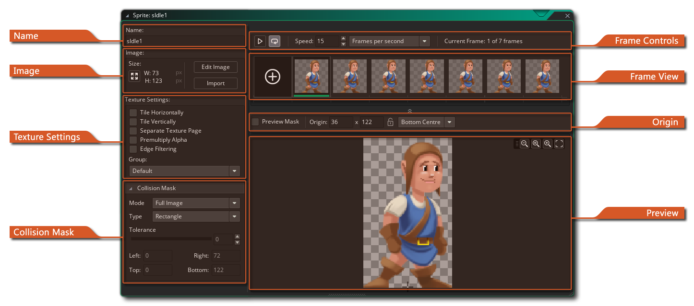
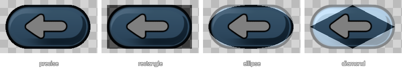
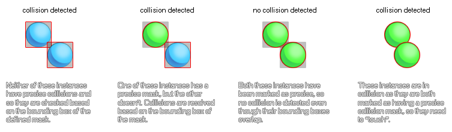

精灵编辑器是你为精灵资源设置常规属性的地方。你可以通过创建一个新的精灵（右键单击  精灵资源文件夹并选择 “创建精灵”）打开此窗口，另一个方法是双击
精灵资源文件夹并选择 “创建精灵”）打开此窗口，另一个方法是双击  现有的精灵或右键单击
现有的精灵或右键单击  现有的精灵并选择 “属性”。构成精灵编辑器的部分如下：
现有的精灵并选择 “属性”。构成精灵编辑器的部分如下：
在这里你可以命名精灵。精灵名称将在整个游戏项目中用于将精灵标识为资源，并且 只能 是字母数字，并且只能使用下划线 “_” 符号。 虽然你可以在精灵名称中使用数字，但名称不能以数字开头，因为在使用 GML 或 DnD™ 时会使其成为无效的资源名称。
在本节中，你可以通过单击 调整精灵大小 按钮
来设置图像大小。这将打开以下窗口：
在这里，你可以看到应用所选变换之前和之后的精灵预览，下面的部分用于设置新的精灵属性，并分为两部分：
- 缩放图像: 使用此选项，你可以调整精灵绘制画布的大小，并且精灵上包含的任何图像都将被拉伸和缩放以适合新的大小。你可以选择缩放并保持长宽比，还可以选择是以像素还是以百分比缩放。根据你正在使用的图像类型，你可能还想要启用线性插值（通常，线性插值会在一个区域上 “平滑” 像素，因此最好不要用于像素艺术）。
- 调整画布尺寸: 此选项会将绘制画布调整为新尺寸而不缩放内容。你可以使用方向箭头设置调整尺寸的 “锚点”，然后设置尺寸值。在调整画布尺寸时可以选择保持纵横比，在底部，你可以选择以像素或百分比形式设置调整尺寸值。
如果对新尺寸感到满意，可以单击 应用 以应用更改并关闭 “调整尺寸属性” 窗口。
注意： 此选项仅适用于位图精灵，并且对于 SWF 或骨架动画精灵将显示为灰色。
在这一部分中，你还可以打开 图像编辑器 以在精灵上绘制，也可以单击 “导入” 按钮导入以前创建的精灵。 精灵可以从最常见的位图格式（PNG、JPG、GIF 等）导入，但 GameMaker Studio 2 还支持矢量精灵（SWF）和骨架动画精灵（Spine）。有关这些格式的更多信息，请参阅有关 导入非位图精灵 的部分。 请注意，导入位图精灵时，你可以在文件资源管理器中选择多个图像文件，每个图像文件将作为单独的 子图像（帧）添加到同一个精灵中。
精灵属性窗口的这一部分处理 GameMaker Studio 2 如何将构成精灵的图像存储在 纹理页 上，以便与设备和浏览器一起使用。对于桌面平台而言，这通常 不太 重要，但是当你开始为移动设备或网络开发时，对图像资产（纹理）的正确管理变得非常重要，因为管理不善的纹理会对你的游戏产生不利影响，从而导致性能问题。
水平平铺 和 垂直平铺默认情况下不会被检查，因为大多数时候你不想平铺精灵。但是，在某些情况下，你可能希望它们平铺，这意味着你应该勾选这些选项，特别是如果你要缩放视图或房间，因为为如果纹理页没有正确生成，缩放会将人工制品引入到游戏的图形中。
如果你的精灵将用作纹理贴图，那么你应该勾选 独立的纹理页 复选框，并且精灵将被赋予一个独立的纹理页（请注意，每个子图像 也 将获得自己的纹理页，因此，如果你的精灵有 10 个图像，你将生成 10 个纹理页）。这将极大地增加游戏的纹理内存需求，因此在使用此选项时必须非常小心。另请注意，一般情况下，如果你的精灵使用此选项进行 3D，则纹理应为 2 的次方数（例如 > 128 x 128、256 x 256、512 x 512等...）。
接下来，你可以选择希望精灵资源所属的纹理组。基本上，纹理组（先前在 纹理组管理器 中定义）是你可以设置的，以便你可以将特定房间或游戏关卡所需的所有图像资源存储在一起。因此，例如，你可以在一个纹理组中包含所有第一关图像，在另一个纹理组中包含所有第二关图像...而 GameMaker Studio 2 会尝试将所有这些分组资源放在同一纹理页上以减少纹理页在你选择的目标平台上运行游戏时进行交换。
注意： 这可能并不总是必要的，并且此方法的性能提升将取决于目标设备是 CPU 绑定还是 GPU 绑定。
你可以在 此处 找到有关纹理页的更多信息。下一个选项是为精灵图像启用 预乘 Alpha 值。启用时，这将预相乘精灵的所有子图像的 alpha。这只有在将精灵绘制到表面或需要产生特殊效果时需要启用。对于普通精灵使用，你不会看到普通精灵和预乘精灵之间有任何明显的差异。
最后我们有 边缘过滤 选项。此选项专门用于为游戏启用线性插值并且在精灵周围看到 “晕圈” 时。这是由同时从纹理页上的多个源文本插值的硬件造成的，当你在分辨率上缩放游戏时，这一点尤其明显。启用此选项将过滤边缘像素以采用最近的完整 alpha 精灵像素的颜色，从而混合插值像素，而不使用先前存在的光晕。
所有精灵都有一个 碰撞遮罩，它对应于精灵区域，当精灵被分配给一个实例时，该区域将用于检测碰撞。 你可以先为碰撞遮罩设置 模式，该模式可以是以下之一：
除了碰撞遮罩模式外，还有各种 类型 的碰撞遮罩，你可以从下拉菜单中选择：
- 自动： GameMaker Studio 2 将根据精灵 alpha 值自动计算碰撞遮罩（这取决于下面解释的 容差 设置）。
- 全图： 它将使用与精灵相同的左、右、顶部和底部边界来计算遮罩。
- 手动： 选择此选项意味着你希望使用左、右、上和下的输入值设置碰撞遮罩的边界。
下图说明了不同的遮罩选项：
- 矩形： 一个简单的矩形碰撞遮罩。在项目中使用时，这是最快解决问题的选项。
- 旋转矩形： 这是一个简单的矩形碰撞遮罩，它将与指定了精灵的实例的 image_angle 值一起旋转。这比常规矩形碰撞遮罩要慢，但比精确的碰撞遮罩更快。
- 椭圆： 创建椭圆形碰撞遮罩。解析起来比较慢。
- 菱形： 创建 “菱形” 碰撞遮罩。解析起来速度较慢，并产生更多的 CPU 开销。
- 精确： 这将根据精灵的轮廓创建精确的碰撞遮罩。 如果精灵具有多个子图像，则这将是放置在彼此之上的所有子图像的边缘的合成。请注意，如果将 模式 设置为 手动 并更改默认值，则精确遮罩将被剪切到边界框。这非常慢并且会产生大量的 CPU 开销。
- 精确 （每帧）： 这会在每帧的基础上创建一个精确的碰撞遮罩（即：遮罩将改变以符合每个不同帧的轮廓）。请注意，如果将 模式 设置为 手动 并且你更改默认值，则精确遮罩将被剪切到边界框。这是迄今为止要解决的最慢类型的碰撞遮罩，应该避免，除非是非常非常具体且不常见案例。

碰撞检查选项对于你的游戏非常重要，因为它们将直接影响你的物体如何交互以及你的游戏如何运行，错误的设置甚至会对整个性能产生负面影响。 这是为什么？ 每当两个实例相遇，并且两个实例都具有有效遮罩时，通过检查遮罩的重叠来生成冲突事件，该重叠可以是精确的或不精确的，并且适合于图像索引。 下面是一张图片来说明这一点：

在此下方，你有 alpha 容差 滑块，它指示相对于精灵像素的透明度创建遮罩的容差 - 具有较高容差的部分透明的公差像素留在遮罩外部，而具有较低容差的遮罩将考虑这些像素。这会影响边界框（未设置为手动时）和用于精确碰撞检查的遮罩。
最后，你可以为遮罩设置 边界框 限制。边界框是精灵面具所适合的矩形区域的名称。只有这个边界框内的像素用于遮罩，并且将参与碰撞检查，默认情况下会自动计算，并考虑 alpha 容差。如果你检查了 “精确（每帧）”，则每个子图像也将分开。自己设置时，可以在左侧，右上方和下方的框中输入值，也可以在精灵视图中单击
并拖动以在精灵上 “绘制” 它。请注意，在 “绘制” 边界框时，会自动生成遮罩以适合最终值。
值得注意的是，如果你转到 “预览” 窗口，则可以使用每个角落中的 “手柄” 调整碰撞遮罩。单击并拖动这些将调整碰撞遮罩，就像输入边界框的值一样。
精灵编辑器的顶部栏包含精灵原点属性和预览窗口的缩放控件。在这里，你可以看到精灵的宽度和高度，以及设置 原点。原点是精灵中与其在房间内的位置对应的点，即：当你在特定的 x / y 位置创建实例时，精灵的原点放在那里。默认它是精灵的左上角，但使用中心通常更方便，或者你可能希望使用其他位置，因此你可以单击
右上角是缩放控件，你可以根据需要在其中放大或缩小预览图像。单击
图标可使图像与实际像素成 1:1。
精灵预览窗口显示游戏中的精灵，可以使用鼠标滚轮
放大或缩小，并通过使用
+
精灵编辑器的这一部分显示构成单个精灵的每个不同的帧。你可以单击
，你可以单击该图标从精灵中删除帧。你还可以单击多个帧上的
/
+
帧工具栏用于在预览窗口中播放帧的动画，播放按钮开始 / 停止动画，循环按钮 用于设置精灵是否循环 （到达最后一帧时返回到第 1 帧） 或类似乒乓球 （到达最后一帧时掉头向后移动），你可以从左侧输入框设置它们的播放速度。 帧速度可以设置为 “FPS（cpu steps）” 或 “游戏 FPS（game steps）”。 可用的帧总数与所选的当前帧一起显示在右侧，你可以选择多个帧，可以使用